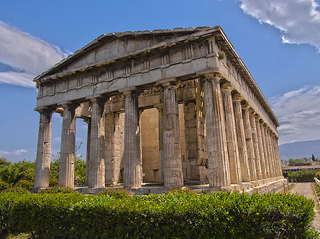

9.4 Simple Event Handling
Xử lý click, mouseover và mouseout, kết hợp chuyển tiếp CSS.

Đoạn văn chuyển dần sang trong suốt trước khi ẩn. Khi hiện lại, trình duyệt khôi phục phần hiển thị trước rồi mới tăng độ mờ.
Đang hiển thị đoạn văn.
Xử lý click, mouseover và mouseout, kết hợp chuyển tiếp CSS.

Đoạn văn chuyển dần sang trong suốt trước khi ẩn. Khi hiện lại, trình duyệt khôi phục phần hiển thị trước rồi mới tăng độ mờ.
Đang hiển thị đoạn văn.